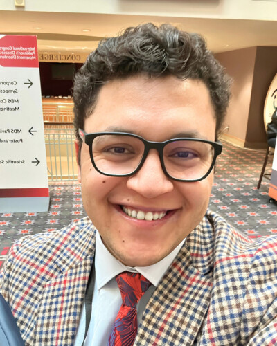

Translational research scientist working on precision medicine in Parkinson's disease, Lewy body dementia, and Alzheimer's. Founder of Negida Academy — the largest clinical research training platform in MENA — and DataCliNiX, a clinical data science consultancy. I write, teach, and mentor.
Pick whichever fits your need — each one links to the right place.
Peer-reviewed work on Parkinson's, Lewy body dementia, and Alzheimer's. Multimodal imaging, machine learning, and biomarker discovery.
Online training in clinical research, systematic reviews, and academic writing. Trusted by 30,000+ trainees across 30+ countries.
Clinical data science for sponsors, CROs, and investigators. Statistical analysis, manuscript support, and study design consulting.
Translational Insights in Clinical Medicine: international, peer-reviewed, open-access journal bridging biomedical research and clinical practice.
Direct mentorship on research design, manuscript review, grant writing, or career strategy in academic medicine and neuroscience.
Essays on academia, neurodegeneration research, productivity for scientists, and lessons from building Negida Academy. Free on Substack.
Full academic CV: education, appointments, grants, publications, awards, teaching, and professional service.
I'm a physician-scientist at Virginia Commonwealth University, where my research focuses on precision medicine for neurodegenerative diseases. I integrate multimodal brain imaging (structural, functional, and diffusion MRI; EEG), fluid biomarkers, and data-driven models to stratify patients with Parkinson's disease, Lewy body dementia, and Alzheimer's into biologically meaningful subtypes.
Outside the lab, I founded Negida Academy in 2014 in Egypt — now the largest clinical research training platform in the Middle East and North Africa. I also run DataCliNiX, a consultancy serving pharmaceutical sponsors and academic investigators, lead Negida Publishing (publisher of the journal Translational Insights in Clinical Medicine), and co-founded the Global Neurosciences (GNS) research collaborative hosted by OHSU Neurological Surgery.
Trained in Egypt (MBBCh), the UK (PhD by Publication, Portsmouth), Turkey (Bahcesehir), and the US (Harvard, VCU, IMPACT-AD). I write, teach, and mentor early-career researchers, especially those from under-resourced settings.
Three converging directions in my current research program.
EEG-based biomarkers for cognitive fluctuations in Lewy body disease using NASA's Psychomotor Vigilance Test. MRI-based PD-MCI subtyping via cholinergic nucleus 4 degeneration.
Frameworks for neurodegenerative disease stratification combining alpha-synuclein quantification, plasma biomarkers, and MRI vascular measures for trial enrichment.
Comprehensive PD progression analysis across clinical, pathological, and data-driven subtypes using 10-year PPMI data with longitudinal modeling.
Clinical research training for medical students, trainees, and physicians worldwide. Founded 2014. The largest clinical research training platform in MENA — 30,000+ trainees across 30+ countries.
Full access to all 7 foundational courses plus live cohort sessions, mentor feedback, and a structured path from research question to published paper. Built for serious learners who want accountability, not just video access.
Innovative solutions to advance health and sciences. Founded by Ahmed Negida; headquartered in Istanbul.
From study design and biostatistical analysis to manuscript preparation, regulatory submission, and publication support. We work with sponsors, CROs, and academic investigators across multiple regions.
Open-access scholarly publishing. Launching our flagship journal in translational and clinical medicine.
International, peer-reviewed, open-access journal dedicated to bridging basic biomedical research and clinical practice. We publish original research, reviews, systematic reviews and meta-analyses, methodological advances, and expert perspectives across translational neuroscience, clinical trials, biomarkers and precision medicine, digital health and AI, evidence synthesis, oncology, cardiovascular and metabolic medicine, and infectious diseases.
Rigorous methodology, reproducibility, transparency, and the highest standards of publication ethics. Fast peer review and broad reach across the translational medicine community.
1:1 mentorship for researchers, trainees, and clinicians.
Book a personalized session for help with research design, data interpretation, manuscript review, grant writing, or career strategy in academic medicine and neuroscience. I block dedicated time each week for these calls.
ahmed.negida@vcuhealth.org (institutional)
ahmed.said.negida@gmail.com (personal)
Department of Neurology
Virginia Commonwealth University
417 N 11th St, Richmond, VA 23298